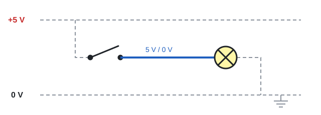

In the simulation you use the circuit like a real one: you operate the inputs and
watch the outputs react, without accidentally moving anything.
Where are the plus and the minus?
In a real electric circuit the current flows from the + of a source (a battery, for example),
through the switch and the lamp, and back to the −. In Logic you do not draw a source, and the
components have no + and −. That is not a mistake: Logic works like digital electronics.
All components get their power from an invisible supply: +5 V and
0 V (ground). It is always there; you do not need to draw it.
A wire carries a signal: on is 5 V, off is 0 V, always measured
against ground.
The − of every lamp, buzzer and relay is invisibly connected to ground. That is why
a single wire can light a lamp.

Solid lines: what you draw in Logic (a switch, a wire and a lamp).
Dashed lines: the supply that Logic adds by itself, from +5 V to ground (0 V).
Real logic diagrams are drawn the same way: the supply lines are rarely shown, because they are
the same for all components.
Starting and stopping the simulation
Click Start simulation. The button turns red
(). Click it again to stop the simulation
and continue editing.
What changes during the simulation?
The component bar, the editing buttons, the rulers and the status bar are hidden.
This gives the panel more room.
The guide lines are turned off.
Components can no longer be moved. You operate input components with the mouse as usual.
After the simulation everything returns as it was, including the guide line setting.
Tip: circuit not working as expected? Stop the simulation,
hold the mouse over the components and check their state in the status bar, or connect a
lamp to a wire to check the signal.
 Start simulation. The button turns red
(
Start simulation. The button turns red
( ). Click it again to stop the simulation
and continue editing.
). Click it again to stop the simulation
and continue editing.